The Backhand Volley¶
The Backhand Volley¶
Nick Bollettieri¶
When it comes to the backhand volley, we'll see that many of the same principles we learned on the forehand volleys still apply. There are also a variety of backhand volleys--block volleys, low volleys, drop volleys, even the swinging backhand volley. So let's get started!
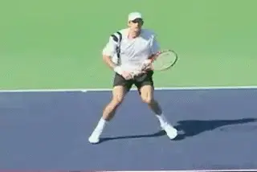
What are the basic principles of a great backhand volley?
Continental Grip
It is even more critical on the backhand side that you work with the continental grip to create leverage in your wrist. Notice the strong wrist position and the big L shape created between the racquet and the arm.
Maintaining this strong wrist position provides solid support to the racquet face at contact for the various types of backhand volleys. Watch how it never breaks down in the course of the motion.
Preparation
Let's look first at the preparation.
To execute the basic one handed backhand volley, [your first reaction is a hip and shoulder turn so that your body is facing the point of contact.]
[The first move is [with the feet and the torso], not the racket.] With the help of your opposite hand on the throat of the racquet, **you
prepare the racquet head so that it is positioned back near your opposite shoulder. You want to avoid taking the racquet head too far
back, getting it behind your body in your preparation.**
In this position, your hitting arm is bent and your elbow is centered between your shoulders.
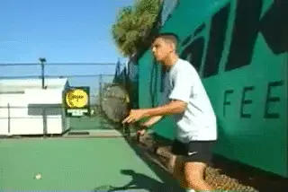
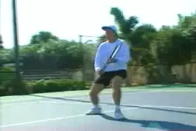
The backhand volley begins with a hip and shoulder turn.
Volley standing close to the back fence to test the size of your backswing.
Preparation Drill
The preparation drill we used for the forehand volley also works well for backhand volleys. Position yourself against the back fence as you reflex volley with your partner. If your racquet head hits the fence in your preparation, you have too much back swing. Make yourself come forward to volley in this drill, then recover back against the fence.
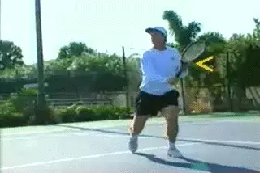
Contact is between the shoulders with the arm straightening out and the face slightly open.
Contact
The body weight is loaded onto the left side, ready to drive forward into contact. As the ball approaches, the body weight begins the action, driving forward as the elbow begins to straighten out, sending the racquet head into contact. The racquet face is slightly open and produces a little under spin, making contact between the shoulders. You want to make contact just before your arm straightens out completely which leaves you with a minimal follow through after contact.\ \
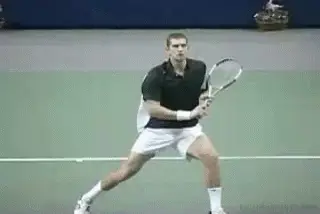
The arms move in opposite directions keeping the shoulders sideways.
The Opposite Arm
Now let's focus on the opposite arm as the forward action begins. You can see the two arms move in opposite directions. This keeps the shoulders from over rotating through contact. Look how the shoulder blades come together, stretching the chest muscles as the back posture stays upright and strong. You'll find in the heat of battle that your opposite arm will work naturally to help you control your balance.
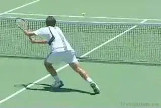
On the drop volley the racket head recoils taking pace off the shot.
The Drop Volley
The block volley on the backhand side begins with a hip and shoulder turn as you reach directly to contact point position in your preparation. As your arm straightens out for contact, the racquet head becomes more solid at impact, blocking the ball as you maintain the big L shape. Using the exact same preparation, you can totally disguise the drop volley. You prepare the racquet to contact point position and get ready to catch the ball on the strings as the arm and racquet again work like a shock absorber. On impact, the racquet head will flex and recoil, taking the majority of the pace off the ball.
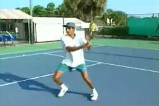
Moving the contact forward creates the angle volley.
Angle Volleys
Depending on the situation, you can create angle volleys two different ways.
- When the ball is well within your reach, [by moving your contact point forward and making contact earlier], you can position the racquet face at the desired angle to create the shot.
<
- Or you can [create the angle in the racquet face by changing your wrist position,] a technique you must learn to be able to angle on the full reaching lunge volleys. When the ball is nearly out of reach, the opposite arm will separate early to help maintain upper body control and balance as you reach beyond your stance.
<< Using the wrist snap to change the ball direction and create the momentum >>
Be confident that you'll regain your balance after making contact on a full lunge, or fear will keep you from going for it. Even if you can't make the shot, you'll still establish in the opponent's mind that you can create a wider wall of defense and range of coverage.
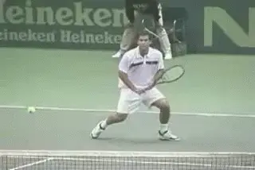
The low volley: good knee bend and a slightly open racquet face.
The Low Volley
On the low volley, you must get down for the shot by bending your knees. Using a slightly open racquet face to create lift over the net, you should block the ball, keeping your wrist position firm to achieve depth.
[Remember, the opponent has you in a forcing situation. Don't rush through it or you will increase your risk of error.]
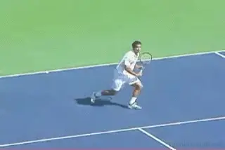
A perfect example of positioning the racquet face behind the bounce on the half volley.
The Half Volley
The half volley is very similar to the low volley in that you must get low for the shot and use the block technique. Positioning the racquet face behind the bounce of the ball, you must anticipate the height of the bounce and the timing for the shot. And remember, sometimes the half volley drop shot is the best alternative you have.
When the opponent takes aim and fires, and you realize you are the target, it is your backhand volley that has the most range in covering your body. Where the forehand volley gets jammed and awkward, your backhand volley can pass freely, like a pendulum across the body. Using the block technique, you maintain firmness in your arm and racquet to achieve depth on the volley.
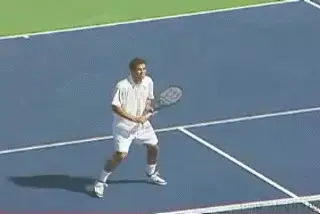
Line up the butt of the racquet with the ball and drive it forward and down on the high volley.
The High Backhand Volley
On the high backhand volley, when the incoming ball is more of a floater and you need to add some pop to fill the opening in the court, you prepare the butt of the racquet so that it points more upward towards contact. [The forward action begins by driving the butt of the racquet forward and down, sending the racquet face up into contact as] [you maintain the L shaped position of leverage in your wrist.]
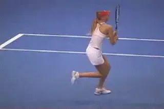
\ The swinging backhand volley is a compact version of the groundstroke.Swinging Volley
The swinging volley as we discussed on the forehand side, is treated like a compact version of your ground stroke, without letting the ball bounce. If you use two hands on your backhand ground stroke, then use both hands on the swinging volley as well.
Using your normal ground stroke grips, position yourself so you can work with the ball within your preferred contact zone. Whether you're one handed or two, you should remember to use margin of error and apply some top spin to your shot for added control. Look to close in behind your penetrating shot so you can capitalize on any short ball opportunity and finish the point.
Two-Handed Backhand Volley
For younger children, the two hands offer more control and support for the volley as they develop their strength. It's better to volley well with two hands than weakly with one. But if you can't hit a backhand volley at all as a young player, you can't begin to incorporate attacking tennis into your overall game. For that reason we let a lot of junior players volley with two hands at first, and later on go to one hand.
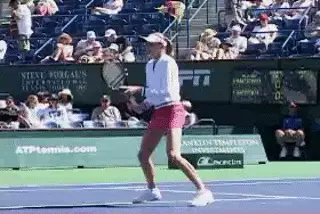
Using two hands can help young players develop the backhand volley.
The two handed backhand volley should find the bottom hand in the continental grip and the top hand in more of an eastern to semi-western forehand grip. Much like the one handed backhand volley, you must maintain leverage in the wrist position of the bottom hand. As the bottom hand works to control the racquet head, the top hand provides added support through contact, then releases off the racquet after contact.
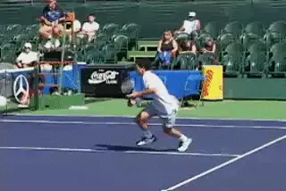
\ \ Eventually a one-handed volley is essential for coverage and reach.\ Learn the One-Hander
You should realize that it is difficult for the attacking net player to maximize their reach and their range at net using two hands. Eventually, you do want to become a skilled one handed volleyer to maximize your threat at net. So you must develop the skill of working with just one hand as well.

Nick Bollettieri is the legendary coach who invented the concept of the tennis academy more than 30 years ago. He has trained thousands of elite players, including some of the greatest champions in the history of the game, players like Andre Agassi, Tommy Haas, Jim Courier, Monica Seles, Maria Sharapova, and Boris Becker. IMG Bollettieri Academies are located in Bradenton, Florida.